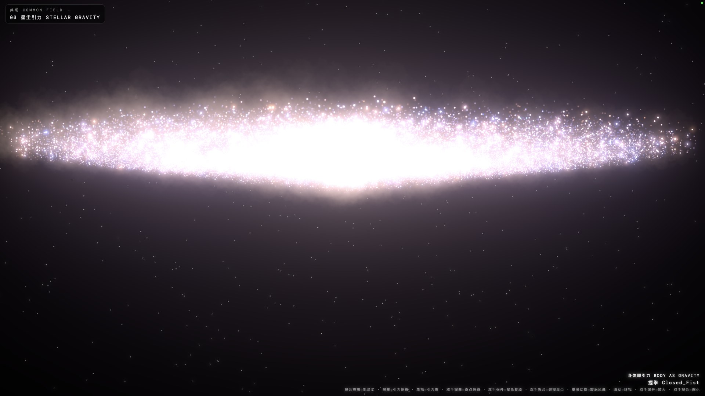

ART / ARCHITECTURE / HACKATHON
虚拟何为VIRTUAL
WHAT?
AI 时代的角色、空间与世界建构
从建筑设计与理科思维出发，
让角色拥有记忆，让空间回应身体，
让想象成为可以参与的世界。

COMMON FIELD / 共场 · 团队创作
AI 时代的角色、空间与世界建构
从建筑设计与理科思维出发，
让角色拥有记忆，让空间回应身体，
让想象成为可以参与的世界。

18 个可进入的游戏、展厅与角色现场。找回卡带的触感，也走向尚未完成的世界。
进入全部世界 ↗← → 键翻页 · F 全屏 · N 逐字稿 · 23 页主讲 + 10 页延伸
以下为本次新制作的浏览器原型。它们将你的研究方向转化为可验证的机制。
写入事件，检索记忆，观察下一次行动的变化。
本地关键词检索原型，不调用大模型。用参数建立空间骨架，点击单元切换建筑与留白。
本次原创程序化平面实验；不等同于研究论文的完整系统。移动指针或触摸画面，观察粒子如何围绕你的行动形成空隙。
指针与触摸交互原型；不读取摄像头。为我的实践准备的方法档案。作者、原始研究与许可保留在案例详情中。